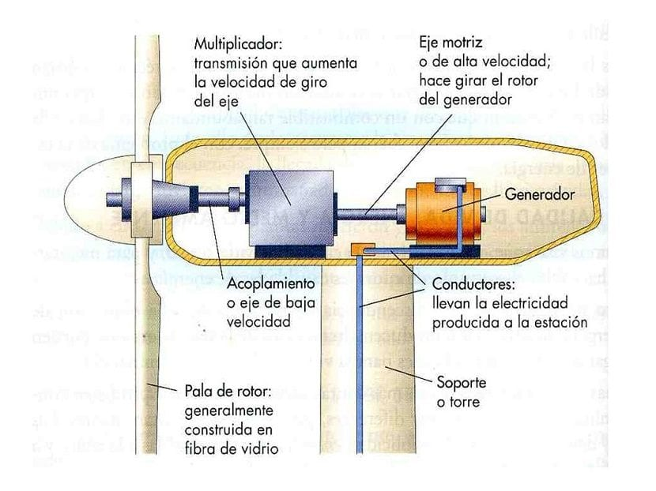

Anemometrs — ar to mēra vēja ātrumu, rezultātus elektroniski nosūta kontrolierim, kas iedarbina turbīnu.
Vējrādis — nosūta signālus par vēja virzienu uz kontrolieri.
Gondola — tajā atrodas visi mehānismi — spārnu vārpstas, ģenerators ar elektroiekārtu, gondolas grozīšanas mehānisms, dzesēšanas iekārtas, zobrati u.c. Gondolā var uzturēties arī apkalpojošais personāls. Tās izmēri ir līdz pat autobusa lielumam un svars līdz pat 100 tonnām.
Rotora spārni — notver vēju un tā spēku pievada rotora rumbai. Modernajās vēja turbīnās spārnu garums var sasniegt 50 m. Tos izgatavo no stikla vai oglekļa šķiedras kopā ar epoksīda sveķiem.
Rotora rumba — pievienota vēja turbīnas mazo ātrumu asij (vārpstai).
Mazo ātrumu ass — vējš iegriež spārnu un tad sāk griezt mazo ātrumu asi, kura savienota ar zobratu pārvadu, kas savukārt iegriež lielo ātrumu asi.
Zobratu pārvads — liek lielo ātrumu asij griezties apmēram 50 reižu ātrāk par mazo ātrumu asi.
Lielo ātrumu ass — rotē ar ātrumu apmēram 1500 apgriezieni minūtē un griež elektroģeneratora vārpstu.
Bremze — diska bremze var mehāniski, elektriski vai hidrauliski apturēt rotoru.
Elektrības ģenerators — to bieži dēvē par indukcijas ģeneratoru. Modernas vēja turbīnas maksimālā elektriskā jauda ir 500—1500 kW.
Kontrolieris — nepārtraukti seko līdzi vēja turbīnas darbībai un stāvoklim. Ja atgadās kļūme, tad tas aptur mehānismu. Kontrolē zobratu mehānismu.
Zobratu mehānisms — pagriež gondolu kopā ar rotoru pret vēju.
Dzesēšanas iekārta — elektriskais ventilators, kas dzesē elektroģeneratoru.
Tornis — būvēts no biezsienu (20—40 mm) metāla caurulēm un tā iekšpusē ir kāpnes vai lifts. Torņa augstums ir vismaz tik liels, cik rotora diametrs. Visu turbīnu nokrāso baltu, lai pasargātu konstrukciju no sasilšanas un deformācijas.
